数据安全与密码学
提示
所以本文档目的是梳理课堂内容脉络与参考资料结合,【面向概念、定义以及考试大纲备考】，因此不是一个完善的学习笔记，原因包括不限于数学证明的一些缺失，概念的通俗化，还有时间原因，很多地方采取了我个人理解的融入，因此有错/看不懂的请blame我！ 另外，我的同学有整理过的LaTex期中期末回忆卷,善用校内论坛搜索即可见.
老师钦定的考纲
-
消息认证码的安全性定义及其作用
-
完美安全的定义及其性能局限性
-
IND-EAV、IND-CPA、IND-CCA的定义，以及在公钥密码中三种安全定义的关系
-
伪随机生成器（pseudorandom generator, PRG）的定义
-
伪随机函数簇（pseudorandom function family, PRF）的定义
-
大数分解问题中，关于整数N=pq下，欧拉函数的定义，包括给定N的分解，如何计算欧拉函数
-
掌握RSA加密的计算过程，包括给定N的分解，根据公钥计算私钥
-
掌握El-Gamal加密系统的加解密计算，包括利用快速幂算法来计算指数
-
认证加密的定义
-
公钥加密与私钥加密的对比
PART ONE
概论
提示
常识性的东西，zc老师在上面花费了不少时间，但实际上不是很重要(在考试中)
加解密syntax
古典加密方法
-
凯撒
-
移位加密
密钥空间充分性原则：任何安全的加密方法必须有一个能够抵御穷举搜索的密钥空间
现代密码学
可证明安全
数学定义 数学假设 规约
完善保密加密
重点
第一部分的重点，主要在这里，出一些选择题。还有期中期末都考到了，去计算某种给定的定义下是否是某种类型的加密，几乎是概率题.
定义
密文无法提供明文信息
完美不可区分性
C的概率分布独立于明文
一次一密 one time pad
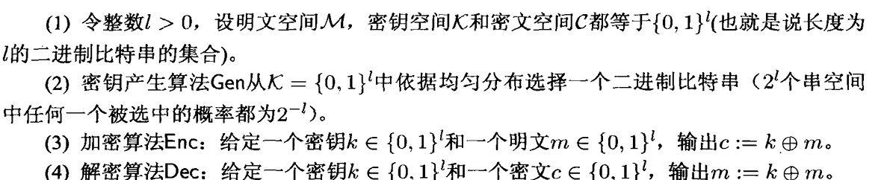
一次一密是完善保密加密。
缺陷：密钥和明文的长度需要一样。加密次数大于1时会泄露信息，只能使用一次。这两个问题也是完善保密加密的两个缺陷。
完善保密加密的代价
密钥空间需要大于等于明文空间
感性地理解，如果密钥的数量比明文数量小，那么有一部分明文会被排除在外，自然不满足完善保密加密。
数学证明简单写一下，这里不是重点：
考虑 \( M(c) \) 时所有密文 \( c \) 解密而得可能明文的集合，可以得到 \( M(c) \leq |K| \)，因为对于每一个明文消息，至少可以确定一个密钥使它解密。那么就会出现一些 \( m' \in M \)，但 \( m \notin M(c) \)。那么，就不符合完美安全。
香农定理
\(|K|=|M|=|C|\)时，满足以下两个条件
产生任意密钥的概率是\(1/|K|\)
对于任意明文\(m\)和任意密文\(c\),只存在一个密钥\(k\)使得 \(Enc_k(m)=c\)
PART TWO
重点
这门课第一年的考试重点基本就在这里，概念和规约性证明。
私钥加密
计算安全
宏观（就考试）来看，放宽了两个条件.
首先是定义“有效”的敌手，指敌手拥有有限的算力，也就是把敌手看作一个以n（安全参数）为参数的多项式时间运行的概率算法（PPT）
其次是，敌手成功的概率是小到可以忽略的，也就是小于一个以n为参数的多项式的倒数。这一性质遵循闭包性.
举栗子
如下题，期中期末好像都考了.
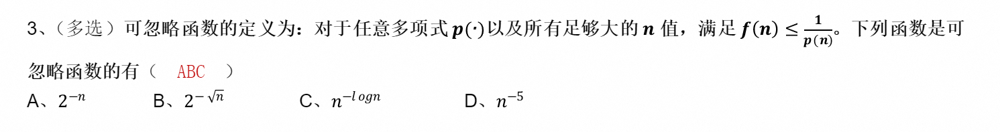
时间复杂度并不是表示一个程序解决问题需要花多少时间，而是当问题规模扩大后，程序需要的时间长度增长得有多快。多项式时间，大致就是 \(O(N),O(N^2)\) 之类的，N出现在底数。
定义计算安全的加密
对称密钥加密方案
安全的基本定义
安全定义有多种，这里是最弱的，唯密文攻击——IND-EAV, Eavesdropper Security，是保证密文不泄露明文的信息。其定义常等同于语义安全或密文不可区分性.
- 给定输入 \( 1^n \) 给攻击者 \( A \)，\( A \) 输出一对长度相等的消息 \( m_0, m_1 \)。
- 运行 \( \text{Gen}(1^n) \) 生成一个密钥 \( k \)。选择一个随机比特 \( b \)（0 或者 1）。
- 加密 \( c = \text{Enc}(m_b) \) 给 \( A \)，把 \( c \) 称为挑战密文。
- \( A \) 输出一个 \( b' \)。如果 \( b = b' \)，实验输出 1；否则输出 0。
两个等价的定理
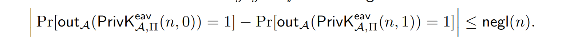
构造
- 定长
简单理解，伪随机生成器的内容和明文进行异或
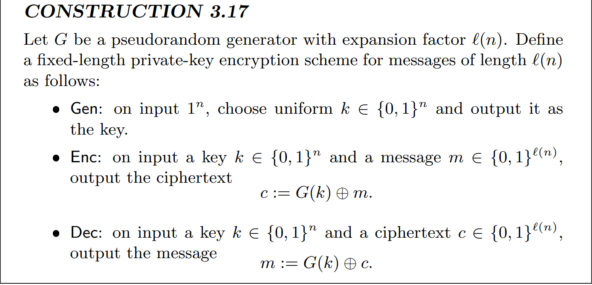
该构造方案的关键（优势）是，L比特的字符串G（k)可比密钥k长得多.规约，如果可以攻破EAV，那么也可以攻破PRG，这是无法实现的.
- 变长消息
使用PRG的变长
- 流密码和多个加密
流密码就是指生成一个流，和明文进行异或的这么一个过程.
EAV中，单个加密的安全并不意味着在多次加密下的安全.
单向函数
单向函数是容易计算，求逆困难。
构造一个weak one way function（我自己浅显理解起来，比如大数分解，离散对数问题，都是这个范畴里面的）
伪随机生成器（PRG）
- 基本定义
Intuitively，对任何多项式时间算法来说，分辨出它是分布D的字符串采样，还是一个均匀随机选择的l比特长的字符串，是不可行的
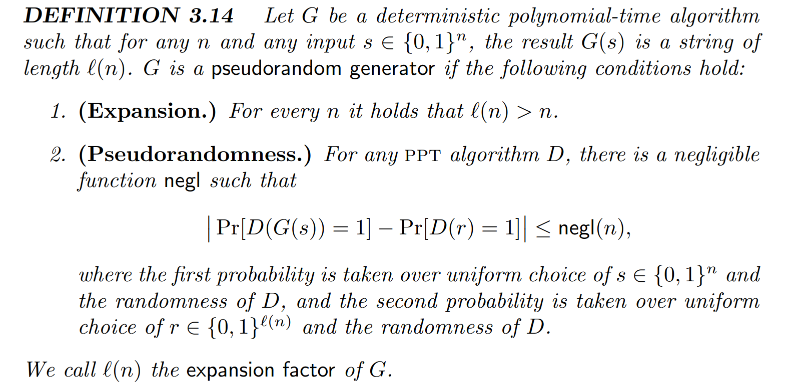
如果单向函数存在的话，那么可以证明伪随机函数是存在的
- 输出长度可变的PRG
给出一个定理，可以扩展1个比特，就可以扩展任意多项式比特
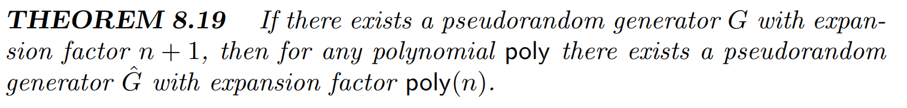
给定一个长度为n的初始种子，用发生器可以得到n+1个，输出n+1中某一位，剩下的n位再次当种子，迭代这个过程
选择明文攻击的CPA安全
- 定义
敌手的能力提高了，允许它适应性第选择多消息来请求加密。
我浅显的理解，ch很难是为了敌手去加密，而是被动不知不觉中成了一个为A所用的预言机。
- 实验
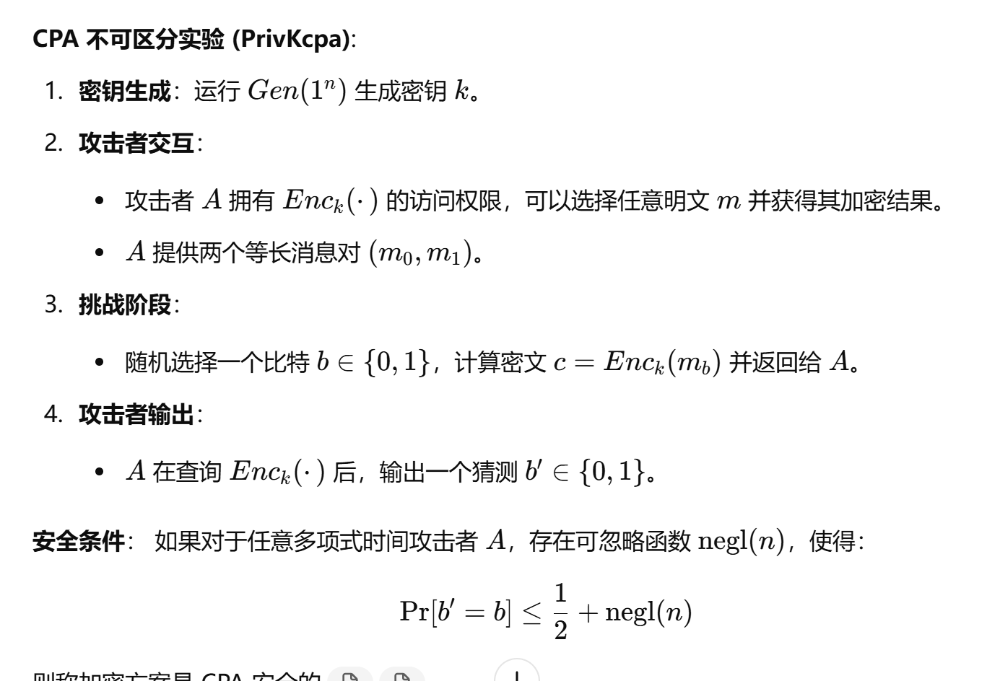
单次加密的CPA安全即意味着多次加密的CPA安全.
确定性的不是CPA安全.
-
构造
-
使用PRF
F 是 PRF。
Gen: 输入 \( 1^n \)，选取 \( k \leftarrow \{0,1\}^n \) 作为密钥输出.
Enc: 输入密钥 \( k \)、消息 \( m \leftarrow \{0,1\}^n \)，随机选取 \( r \leftarrow \{0,1\}^n \), 输出密文 \( c := \langle r, F_k(r) \oplus m \rangle \).
Dec: 输入密钥 \( k \)，以及密文 \( c = \langle r, s \rangle \)，输出明文 \( m := F_k(r) \oplus s \).
即使攻击者知道随机数r，也无法推导出\(F_k(r)\)的值.
-
证明
定义repeat为\(r_c\)被预言机使用来回答>1个询问 A最多询问q(n)多项式次数，r是随机选取的，因此概率是\(q(n)/2^n\) 因为敌手是足够聪明的，如果repeat发生就能成功，1; 如果不能,那么和猜测的概率一样，½
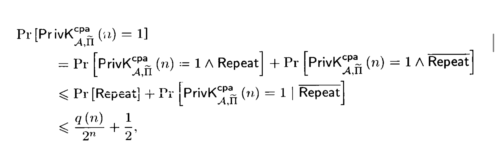
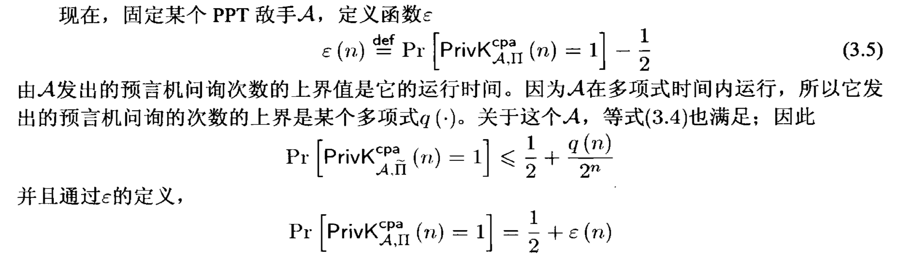
-
归约
用A来构造一个伪随机函数F的区分器D，区分器D目标是判断出这个函数是不是随机的。D来模拟A的CPA不可区分性，如果成功就猜测这个函数是伪随机，相反那么猜测它的预言机是个随机函数。
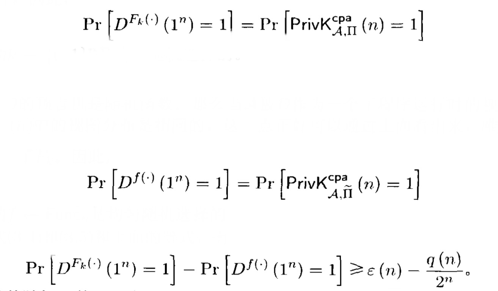
伪随机函数
- 定义
令 \( F : \{0, 1\}^* \times \{0, 1\}^* \to \{0, 1\}^* \) 是有效的带密钥函数。
对于所有多项式时间区分器 \( D \)，都有：
块密码
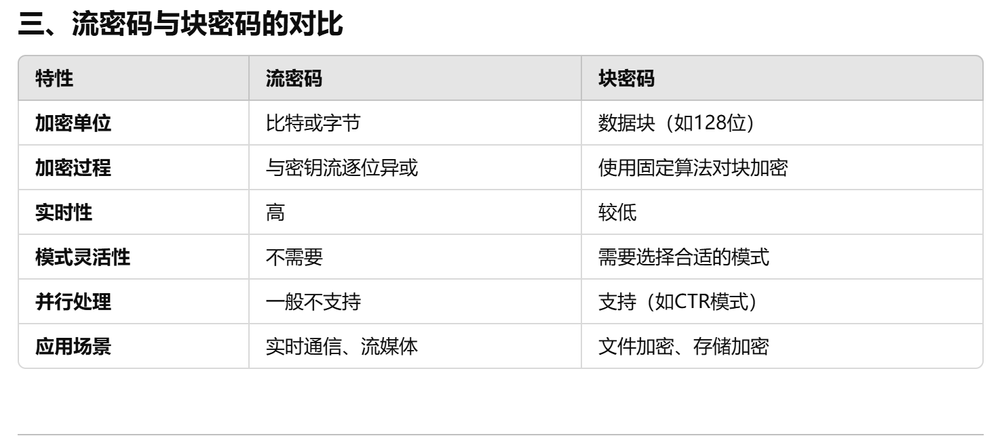
CCA（chosen-ciphertext attacks）
padding oracle attack
是针对块加密（如cbc）的选择密文攻击
oracle(神谕)的作用，收到密文之后根据填充合法否返回0/1
攻击者可以利用这些反馈信息逐步推断出密文块的解密结果
定义与实验
概念
如果是cca,一定是cpa CCA= 一个cpa安全，且这个方案具有唯一的mac(见后文)
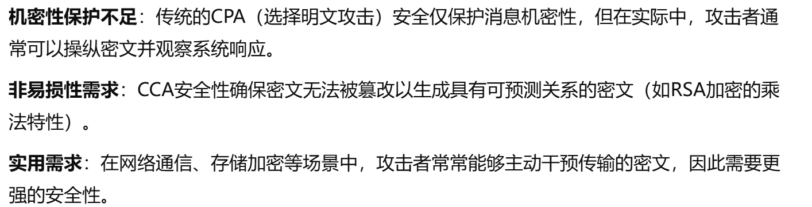
- 定义
一种主动攻击模型，攻击者能够选择密文并观察其对应明文，以此推导加密方案的信息.
- 实验
\( \text{PrivK}^{cca}_{A, \Pi}(n) \):
1. \( k \gets \text{Gen}(1^n) \)
2. \( b \gets \{0, 1\} \), \( c \gets \text{Enc}_k(m_b) \) （挑战）
3. \( A \) 可以访问 \( \text{Enc} \)、\( \text{Dec} \)，但不能访问挑战密文
4. 最终 \( A \) 输出 \( b' \)
只要满足这个
unforgeable encryption experiment
不可延展 不可伪造
k<—Gen\(1^n\),A可以使用Enc，可以询问n次.
然后它给出一个 密文c,\(Dec_k(c)=m\)如果m没有报错，而且m没有被询问过，那就1
AE(authenticated encryption)
-
定义
- 等价定义1
一个A private-key encryption is an AE if CCA-secure && unforgeable
- 等价定义2
给定两个 Oracle:
\(\text{当} \, b = 0, \, \text{Oracle 1 输出} \, \text{Enc}_k() \text{ 和 } \text{Dec}_k()。\)
\(\text{当} \, b = 1, \, \text{Oracle 2 输出} \, \text{Enc}_k^0() \text{ 和 } \text{Dec}_\perp()，\) \(\text{其中：} \) \(\text{Enc}_k^0() \text{ 对任何输入加密后得到全零。}\) \( \text{Dec}_\perp() \text{ 在解密时始终报错。}\)
\(\text{要求：} c \text{ 不允许将 Oracle 1 输出的结果传递给 Oracle 2。}\)
\(\text{最后，算法} \, A \text{ 输出} \, b'。\)
-
构造
- encrypt and authenticate
- encrypt then authenticate
如果\(Π_E\)是\(CPA\)，\(Π_M\)是\(strongly_{mac}\)那么下面这个就是一个ae
\(Gen\):生成两个密钥\(K_E,K_M\left\{0，1\right\}^*\) \(Enc:\) \(step1\):\(c<-Enc_{K_E}(m)\quad\),\(t<-Mac_{K_M}(c)\) \(step2\):output 密文\(<c,t>\) 先验证，如果valid解密；否则，output \(⊥\)
完整性验证独立于解密过程，因此解密仅在完整性验证通过时进行 - authenticate and encrypt
提示
encrypt then authenticate 是最优的
比较AE和CCA
重点
这里以题目代点，是第二次"作业"，也是考试题()
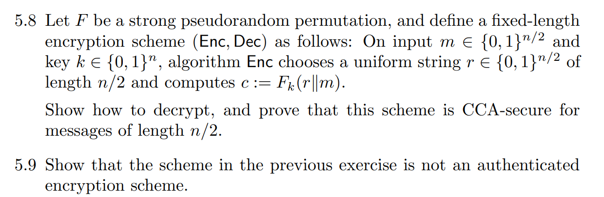
MAC(message authentication code)
定义
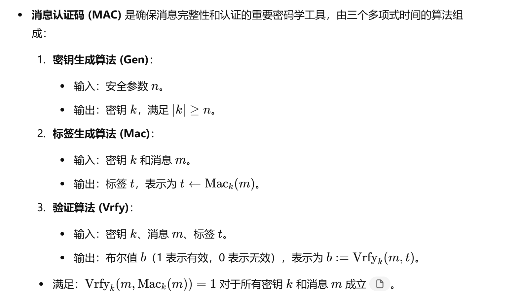
其中，标签生成算法可能是随机，而验证算法是确定性的
安全性定义
简单来说：一个 MAC 是安全的，当且仅当没有高效的攻击者能够为从未认证的消息生成有效标签对。
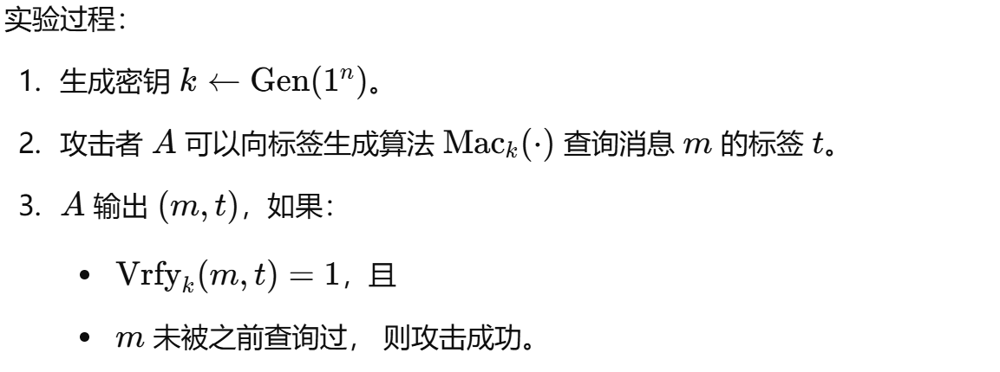
用PRF可以构造一个MAC（固定长度）
CBC MAC
- 分块加密，basic
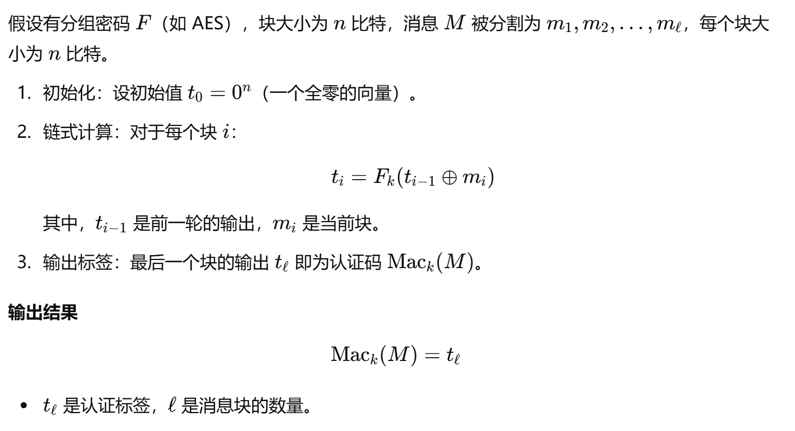
如果底层分组密码 F是伪随机函数（PRF），则 CBC-MAC 是安全的（即满足抗伪造性，EUF-CMA 安全)
仅能保证在固定长度上的安全。
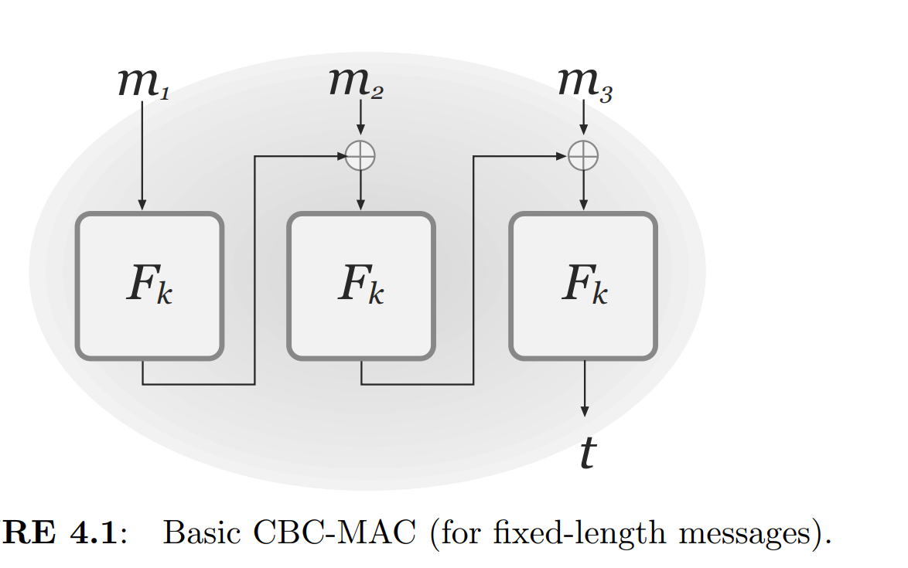
-
改进，使其可以处理变长消息
-
在消息头增加长度
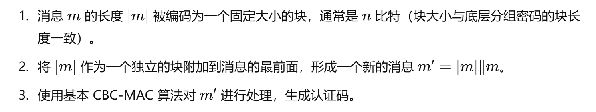
-
两个密钥变换
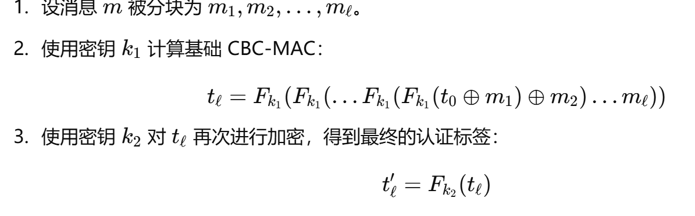
生成两个sk，安全性更高，不需要预先知道长度，但增加成本
Hash
面向考试
这里不在考纲里事实上也没考，上课时也是zc补充的。
形式化定义
压缩字符串，做到尽可能地抗碰撞。
- 碰撞阻力（Collision Resistance）：
无论输入如何，找到\(H(x)=H(x′)\)且 $x≠x′ $的可能性应该是极低的
- 二次原像阻力（Second-Preimage Resistance）：
给定\(x\),难以找到不同的\(x'\)，满足\(H(x)=H(x')\)
- 原像阻力（Preimage Resistance）：
给定哈希值\(y\),难以找到任意 \(x\) 满足\(H(x)=y\)
keyed hash function(compression function)
key 是告诉敌手的 Hash Function (Output Length \( l(n) \)):
-
Gen()
A probabilistic function. Input: \( 1^n \), Output: \( \text{key } s \). -
H
A deterministic function. Input: \( s \), a string \( x \) (where the length of \( x \) is greater than \( l(n) \)).
Output: A string \( H^s(x) \) of length \( l(n) \).
现实中用很多unkeyed的，也可以达到要求
merkle-damgard tranform
从处理定长到处理变长 Hash Function Definition
\((\text{Gen}, h)\)
\( h \) takes input \( n + n' > 2n \), output is \( n \).
Fixed length \( l \leq n' \), with an initial vector \( \in \{0, 1\}^* \).
① Gen generates a key.
② H:
Append a \( 1 \) to \( x \), followed by \( 0 \)s until the total length satisfies \(\text{mod } n' = n' - \ell\).
Append the length of \( x \), \( L \), represented using \(\ell\) bits.
Divide the padded string into \( B \) blocks of \( n' \)-bit each.
Set the initial value \( IV \) of length \( n \).
For each block \( x_i \), compute:
\(z_i = h^s(z_{i-1} || x_i)\)
The final hash value is \( z_B \).
证明分成两种情况，反证法，不管怎么样都碰撞
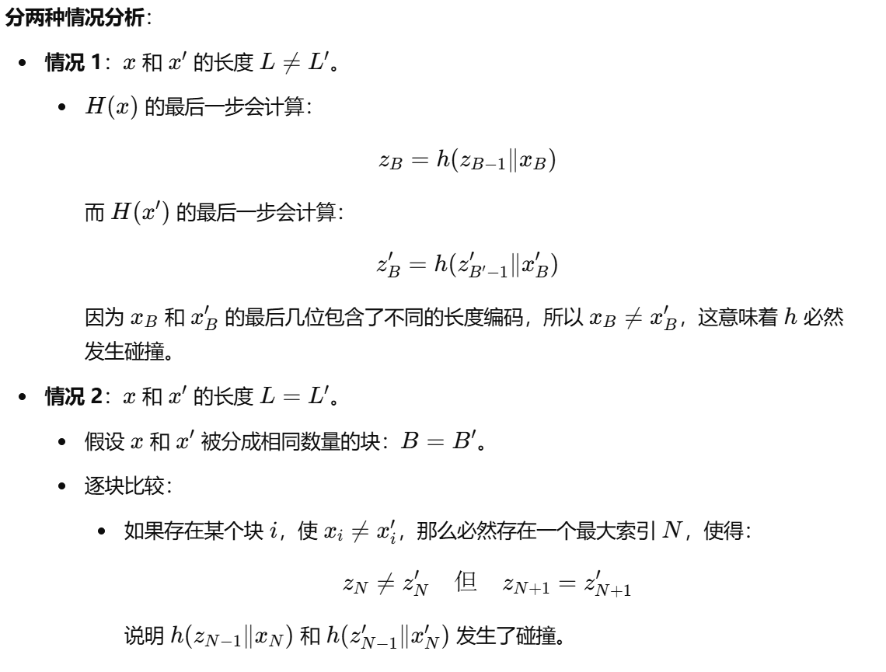
应用——hash and mac
先hash，再用hash的输出进行mac
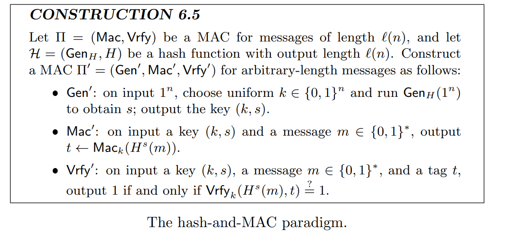
安全性证明,如果用到的这两组原本都是安全的，那么这个hash and mac就是安全的
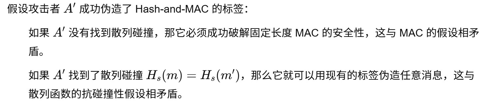
PART THREE
公钥加密
注意
此时已经是1.8 2:23 ,我才刚开始看这里。...因此下面部分很简略很潦草。 不过从结果来看，只需要掌握基本的加解密方法和计算就可以，考试的时候只出了一道计算题。但实际上是非常非常非常重要的。
公钥加密与私钥加密的对比
提示
这个地方建议好好看看课本
- 解决了密钥分配问题，甚至可以使得通信被监听
- CPA=EAV，因为公钥的存在，访问预言机
- 完美安全的公钥不存在，无限强大的敌手总能确定消息
- 确定性公钥加密均不安全。对称加密提到，任何确定性的加密方案都不是cpa安全的，而在公钥下cpa和eav等价。
RSA
中国剩余定理。
找到两个大素数p,q乘积为N，欧拉函数值为\((p-1)(q-1)\),找与phi(N)互素的e,作为公钥,求e模φ的逆元d,私钥,加密：\(c=m^e \ mod\ N \quad\) 解密： \(m=c^d\ mod \ N\)
求模逆，拓展欧几里得。
大数分解难，欧拉函数简单.
Elgamal
可以理解为，在相应的群里面，指数函数时单项函数 令X为一个PPT算法，输入为\(1^n\)，输出为一个循环群G，阶为q,生成元为g 随机选择\(x,h=g^xmodq\).公钥：\(q,g,h\). 私钥：\(x\). 加密：随机数\(r\),加密\(m\)，\(c_1=g^r \ mod \ q\),\(c_2=h^r *m\ mod \ q\) 解密：\(c_2c_1^{-x}\)
快速幂容易，而离散对数问题很难，它可以做到选择明文攻击下(CPA)的不可区分